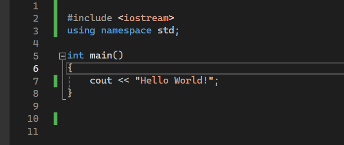

Добре дошли на първия си урок по програмиране на C++! В този урок ще разгледаме основите на програмирането на C++, включително как да напишете и стартирате проста програма. Нека започнем!
C++ е мощен, високоефективен програмен език, използван за системно/софтуерно развитие, разработка на игри, реални симулации и други. Той е разширение на програмния език C, с допълнителни функции като класове и обекти.
Преди да можете да пишете и стартирате C++ програми, ви трябва хубава програма за писане и аз ви препоръчвам Visual Studio 2022.След като сте изтеглили програмата трябва в нея да изтеглите добавката за кодиране в конзола и след като се изтегли вие сте готови правене на вашата първа програма.
Сега нека напишем проста C++ програма, която отпечатва "Hello, World!" на екрана.
След като напишете код като този в снимката вие трябва да натисните бутона "Local Windows Debugger", тогава би трябвало да ви излезе конзолата как изписва Hello world!
C++ поддържа няколко основни типа данни, включително:
Променливите съхраняват данни, които могат да се използват и манипулират в програмата ви.
C++ включва различни контролни структури като цикли и условни конструкции.
В този урок научихте основите на C++, включително настройка на вашата среда, писане и стартиране на проста програма и разбиране на основния синтаксис и концепции. Практикувайте писането на още прости програми, за да се запознаете с тези концепции.
Приятно програмиране!